Entenda o que é informática, a origem dos computadores digitais e a diferença entre seus componentes físicos e lógicos.
O que é informática e TI
Informática
Do francês informatique: informação + automática. Trata do processamento de dados por computadores — transformar entrada bruta em informação útil.
Tecnologia da Informação (TI)
Área ampla que integra infraestrutura, sistemas, segurança e processos. Aplica a informática em organizações e na vida cotidiana.
O Bit e a Máquina de Turing
Na década de 1930, o matemático Alan Turing descobriu que o processamento pode ser feito com apenas dois dígitos: 0 e 1. Essa unidade é chamada de Bit.
O poder dos Bits
Um bit só tem dois estados (ligado/desligado). Mas quando combinamos bits, o poder cresce exponencialmente:
2 bits: 4 estados
4 bits: 16 estados
8 bits: 256 estados (1 Byte)
Medidas de Armazenamento
Nome
Valor
Byte
8 bits
Kilobyte (KB)
1.024 bytes
Megabyte (MB)
1.048.576 bytes
Gigabyte (GB)
1.073.741.824 bytes
Funcionamento básico do computador
Todo computador executa o mesmo ciclo: recebe dados, processa, armazena e devolve resultados.
Selecione uma etapa do ciclo para ver o detalhe.
Hardware e software
Hardware
A parte física: tudo o que se pode tocar.
Processador (CPU)
Memória RAM
Placa-mãe
HD / SSD
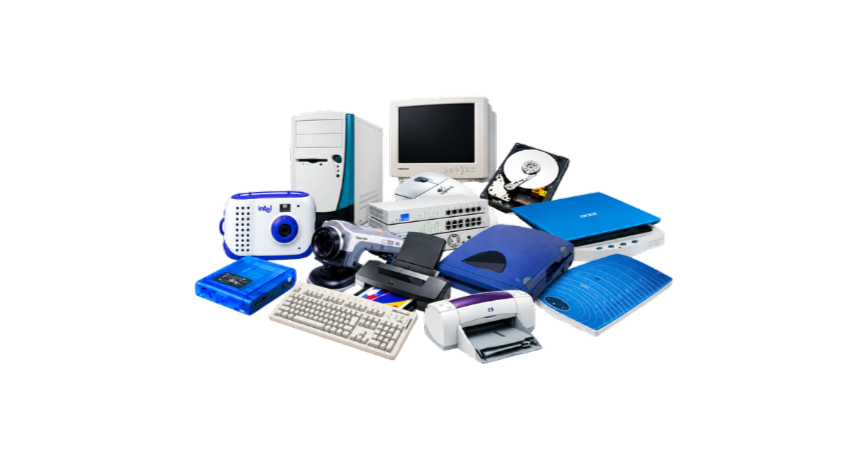
Software
A parte lógica: instruções e programas.
Sistema operacional
Navegador e editores
Aplicativos de escritório
Drivers de dispositivos
Um pouco da história da Computação
A computação evoluiu do trabalho de matemáticos para se tornar onipresente. Clique nos marcos abaixo:
Começou com a ideia de programar máquinas para cálculos. Ada Lovelace é considerada a primeira programadora, escrevendo algoritmos em 1848.
Alan Turing introduziu a máquina de 0s e 1s. Grace Hopper criou a primeira linguagem de computador (COBOL). Os primeiros computadores eram mainframes que usavam cartões perfurados.
Steve Jobs e Steve Wozniak lançaram o Apple. Bill Gates e Paul Allen criaram o MS-DOS. Surgiram os disquetes e as interfaces gráficas.
A Internet evoluiu de redes militares/acadêmicas para o mundo todo. Tim Berners-Lee criou a World Wide Web. O Wi-Fi e o Bluetooth surgiram para conectar dispositivos sem fio.
Módulo 02
As partes de um computador
Conheça os componentes internos, a memória, o armazenamento e os periféricos que conectam o usuário à máquina.
As várias formas de um computador
Quando pensamos em computadores, imaginamos laptops ou desktops. Mas eles estão em todos os lugares: TVs, geladeiras, carros e lâmpadas inteligentes.
Você sabia?
Um telefone celular moderno é mais de 1.000 vezes mais rápido que o computador Univac 1 de 1951, que ocupava uma sala inteira.
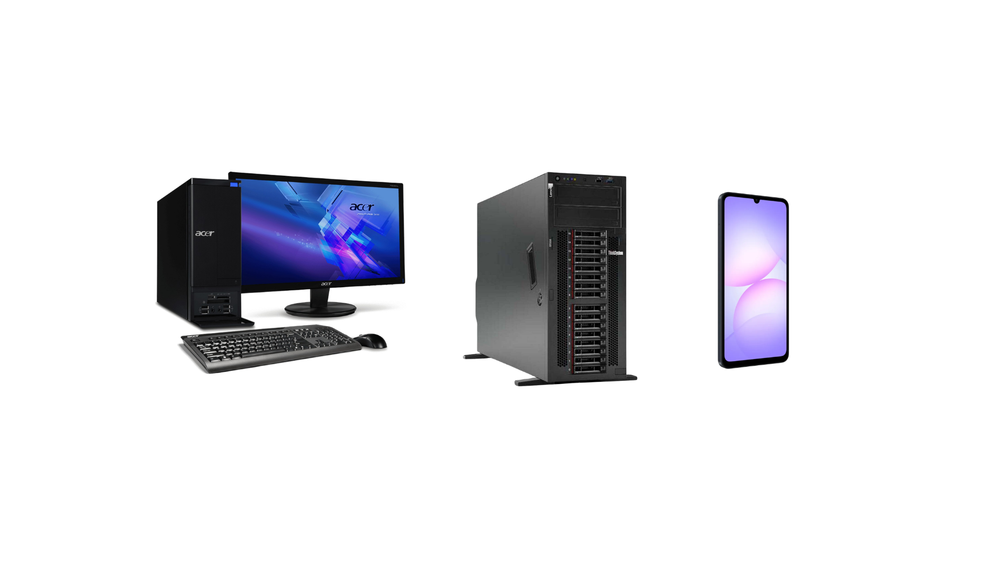
Placa-mãe e Processador
Placa-mãe
É a base de interligação. Conecta processador, memória, armazenamento e periféricos, permitindo que troquem dados entre si.
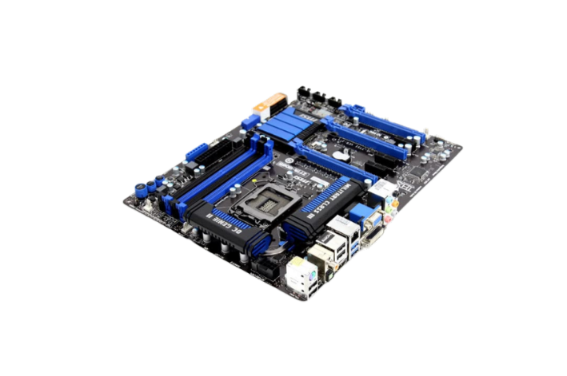
Processador (CPU)
Executa instruções e cálculos. Sua velocidade e número de núcleos influenciam diretamente o desempenho do sistema.
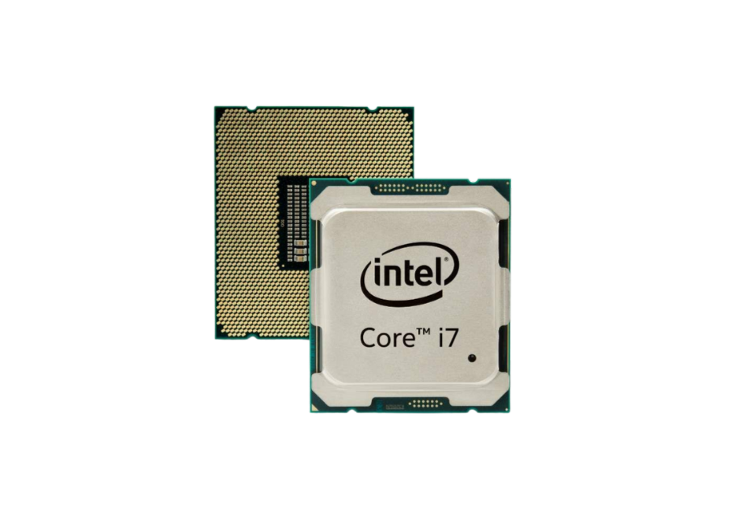
A GPU (Unidade de Processamento Gráfico)
A GPU cria o que você vê na tela. Ela é otimizada para processamento gráfico, que é altamente complexo. Veja a diferença física:
CPU (Processador)
Foco geral (executa o sistema inteiro)
Possui poucos núcleos (ex: 4, 8 ou 16)
Rápida em tarefas sequenciais
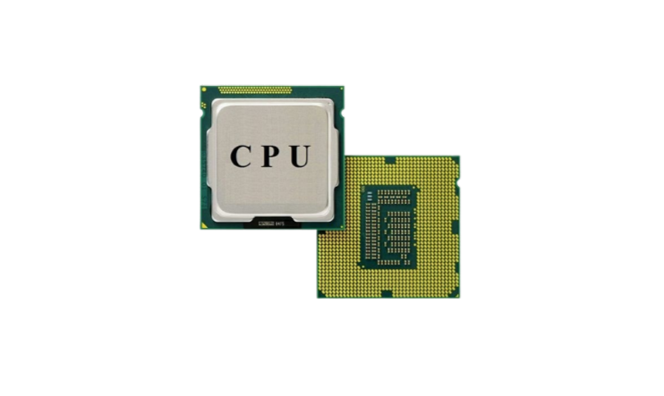
GPU (Gráfica)
Foco restrito a imagens e cálculos complexos
Possui milhares de núcleos menores
Muito rápida em tarefas paralelas
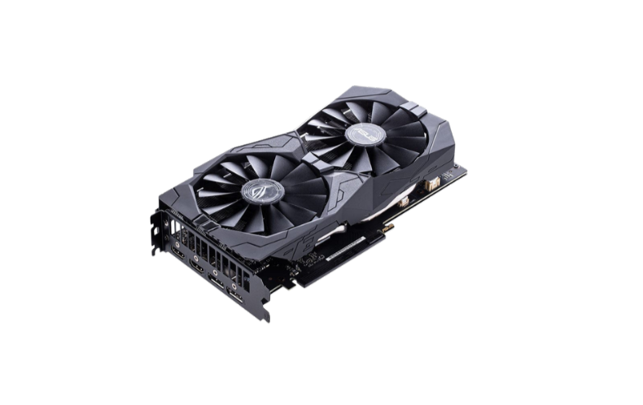
Memória RAM
A RAM é a memória de trabalho: guarda temporariamente os programas e dados em uso. Quanto mais RAM, mais programas podem rodar ao mesmo tempo sem lentidão.
Memória disponível. Execução fluida.
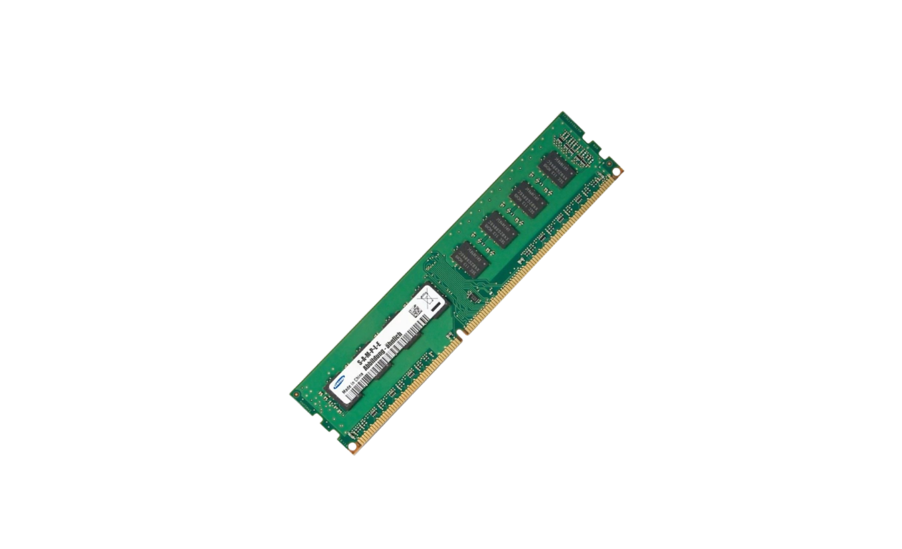
Armazenamento: HD, SSD e Externos
HD (Disco Rígido)
Usa pratos magnéticos. Grande capacidade a custo baixo.
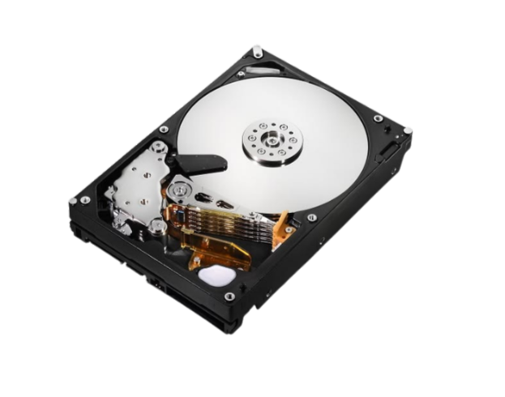
SSD (Estado Sólido)
Usa memória flash, sem partes móveis. Muito mais rápido que o HD.
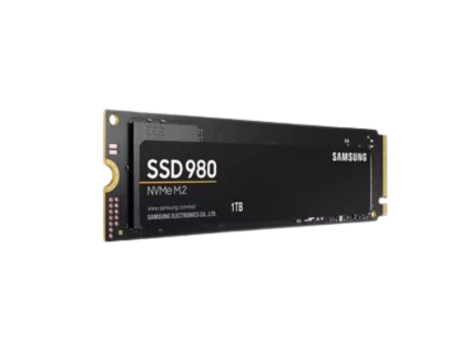
Externos
Pendrives e HDs externos conectados por USB. Portáveis e práticos.
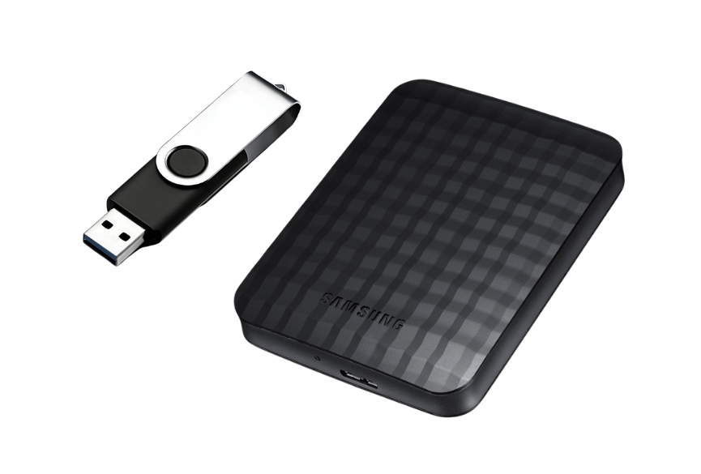
Periféricos
Enviam dados do usuário ou do ambiente para o computador.
Mostram ou emitem os resultados produzidos pelo computador.
Fazem as duas coisas: enviam e recebem dados.
Outros Componentes Essenciais
Além da placa-mãe e do processador, um computador precisa de uma estrutura física, energia e refrigeração para funcionar.
Gabinete
A "casa" do computador. Protege e organiza os componentes internos (placa-mãe, HDs, fonte) e ajuda no fluxo de ar para refrigeração.
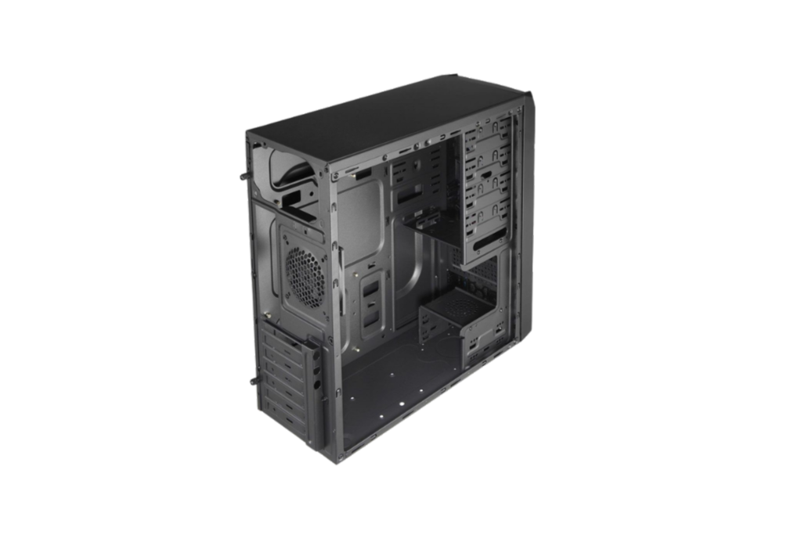
Fonte de Alimentação
Converte a energia da tomada (corrente alternada) na energia que os componentes precisam (corrente contínua). É o "coração" elétrico do PC.
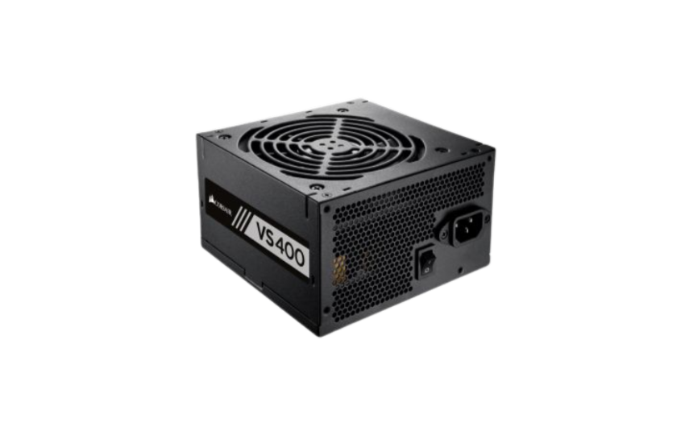
Cooler
Sistema de refrigeração (ventoinhas e dissipadores). Essencial para evitar que o processador e a placa de vídeo superaqueçam e danifiquem.
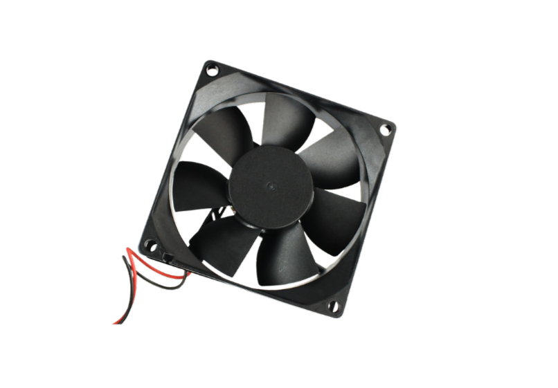
Placa de Vídeo (GPU Dedicada)
Componente responsável por processar e renderizar imagens, vídeos e jogos. Essencial para tarefas gráficas pesadas e design.
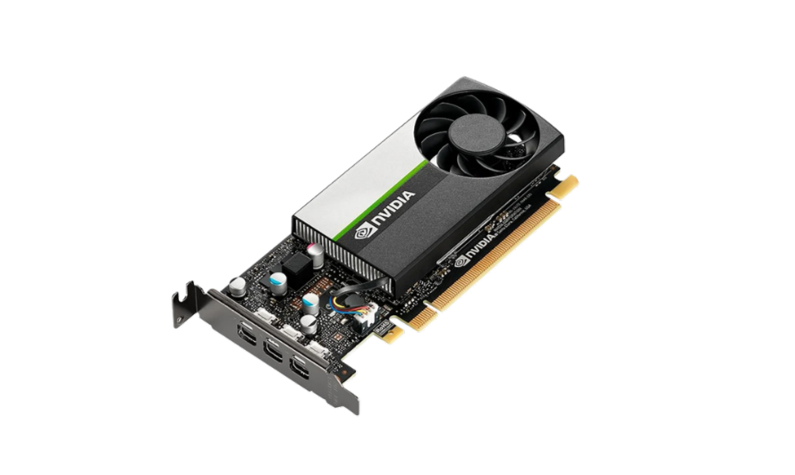
Módulo 03
Computadores na nuvem
Entenda a diferença entre a computação local e a nuvem, e como a infraestrutura remota mudou a história.
Computação Local
Dados no próprio dispositivo
Funciona sem internet
Controle direto do equipamento
Limitação de espaço e desempenho
Computação em Nuvem
Acesso pela internet
Escala conforme a demanda
Sincronização entre dispositivos
Depende de conexão
Histórico e Cargas de Trabalho
Nos primórdios, os computadores se comunicavam em rede para serem mais poderosos.
Mainframes e Terminais: Grandes computadores processavam o trabalho e enviavam o resultado para telas e teclados simples.
Escalabilidade: A capacidade de aumentar ou diminuir o poder de processamento e armazenamento conforme a necessidade.
Separação de Cargas: Grupos de computadores dedicados a tarefas específicas, como apenas armazenar dados ou apenas processar.
Exemplos de Uso
Armazenamento de arquivosE-mailEditores onlineStreamingServidores de aplicações
Módulo 04
Como o software dá instruções
O software é o "motorista" que orienta o hardware. Ele inclui desde o sistema operacional até os programas que rodam na nuvem.
Sistema Operacional
Funções
Gerenciar processos e memória
Controlar periféricos e drivers
Organizar arquivos e pastas
Oferecer interface ao usuário
Aplicar segurança e permissões
Exemplos de Sistemas
Windows (desktop)
macOS (desktop)
Linux (servidores e desktop)
Android e iOS (móvel)
Arquivos e Pastas
Organização
Pastas agrupam arquivos por assunto. Uma estrutura clara facilita encontrar, mover e fazer backup de documentos.
Extensões Comuns
Clique em uma extensão para saber mais:
Software local vs Software na Nuvem
Clique nos botões abaixo para ver como os dados viajam em cada tipo de software.
Seu Computador
CPU
Internet
Servidor na Nuvem
Processamento
Aguardando execução...
Módulo 05
Identidade e Segurança
Proteja seus dados e garanta que apenas pessoas autorizadas acessem os sistemas de computador.
Identidade Digital
Sua representação no mundo virtual. Inclui logins, senhas e dados pessoais que provam quem você é ao acessar sistemas.
Autenticação (Login)
Senhas fortes
Autenticação de dois fatores (2FA)
Segurança e Força da Senha
Criar senhas fortes é a primeira linha de defesa. Digite uma senha abaixo para testar a força dela:
Aguardando senha...
Além da senha, práticas como Criptografia de dados, Firewalls e Backups protegem contra acessos não autorizados.
O que é SSO?
Single Sign-On (Conexão Única) permite usar uma conta de um serviço (ex: Google) para entrar em outro serviço (ex: Spotify). O sistema confia na identidade já verificada.
O Futuro: Biometria
Senhas podem ser roubadas. Por isso, a biometria (uso de características biológicas únicas) está crescendo.
Biometria Comum
Impressão digital
Reconhecimento facial
Reconhecimento de voz
Padrão do globo ocular
Futuro: Análise de Marcha
Sistemas com Inteligência Artificial (IA) analisam a forma como você caminha para identificar você unicamente pelos seus padrões de movimento.